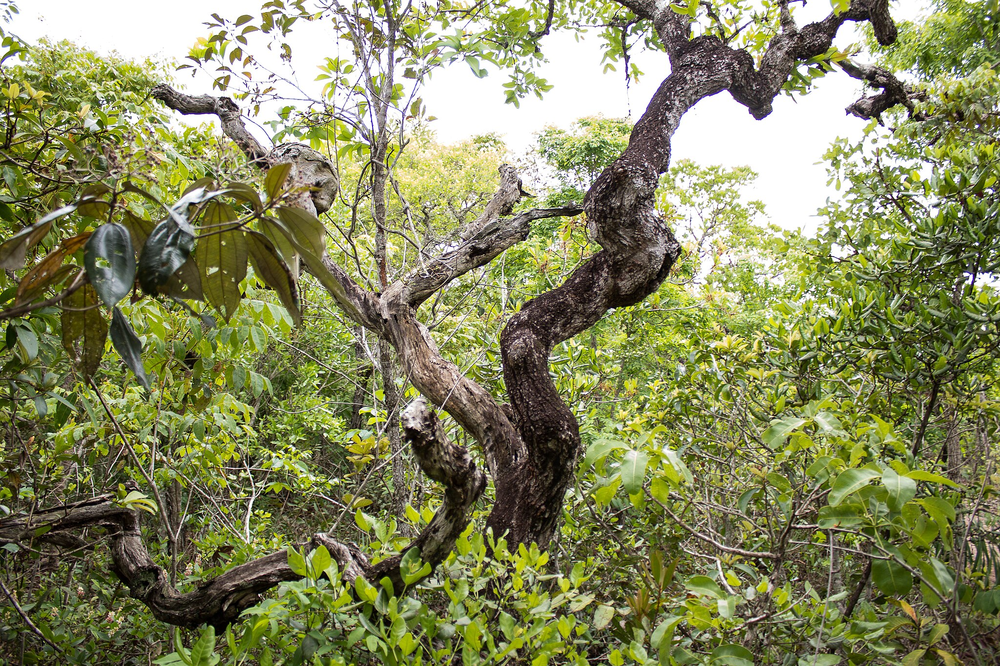
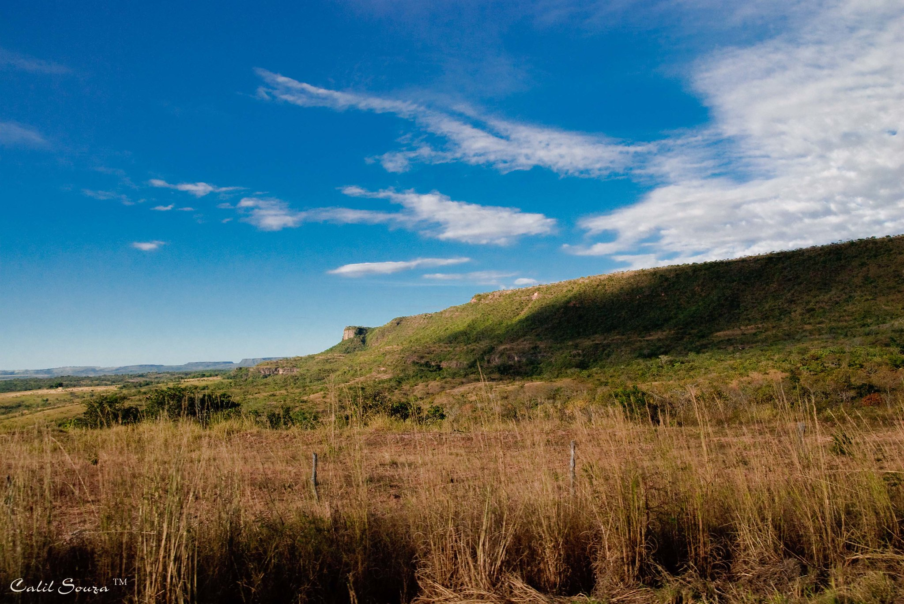
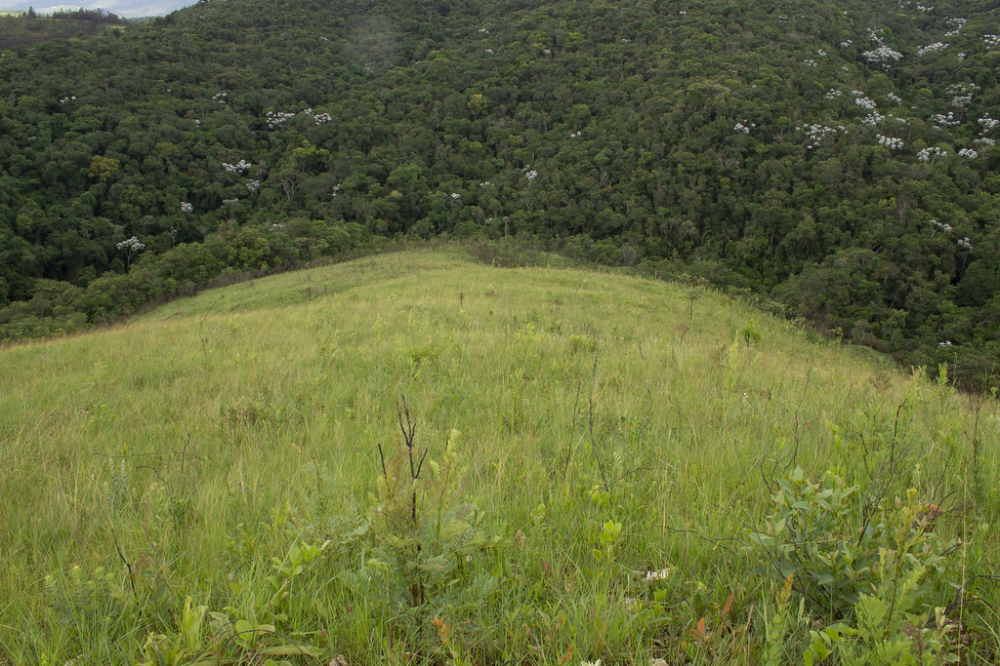
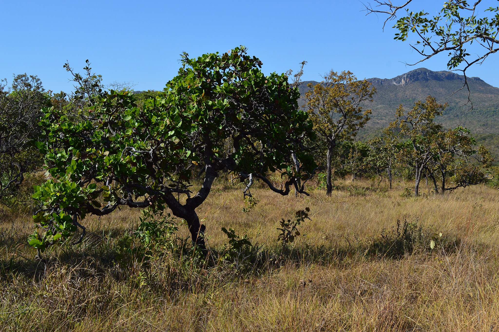

Cerrado





INFORMAÇÕES SOBRE O BIOMA
Área Total do Bioma
O Cerrado é um dos cinco grandes biomas do Brasil, cobrindo cerca de 25% do território nacional e perfazendo uma área entre 1,8 e 2 milhões de km² nos Estados de Goiás, Tocantins, Mato Grosso do Sul, sul do Mato Grosso, oeste de Minas Gerais, Distrito Federal, oeste da Bahia, sul do Maranhão, oeste do Piauí e porções do Estado de São Paulo.Clima
- O clima predominante no Domínio do Cerrado é o Tropical sazonal, de inverno seco.
- Temperatura média: em torno de 22-23ºC, As máximas absolutas mensais não variam muito ao longo dos meses do ano, podendo chegar a mais de 40ºC.
- Precipitação: Assim como ocorre nos outros biomas do Brasil, a posição e extensão do Cerrado são determinadas pelo clima, que é do tipo tropical, com precipitação variando de 750 a 2000 mm por ano, em média, embora na maior parte da província ocorram chuvas entre 1100 e 1600 mm por ano.
Relevo
- O relevo do Domínio do Cerrado é em geral bastante plano ou suavemente ondulado, estendendo-se por imensos planaltos ou chapadões. Cerca de 50% de sua área situa-se em altitudes que ficam entre 300 e 600 m acima do nível do mar; apenas 5,5% vão além de 900m.
Hidrografia
- A localização central faz com que o Cerrado se situe sobre os grandes divisores de águas do país, abrigando as cabeceiras de suas maiores bacias hidrográficas. Ao sul, há nascentes de rios da bacia do Paraná; a Sudeste, do Paraguai; ao Norte, da bacia Amazônica; a Nordeste, do Parnaíba e a Leste, do São Francisco.
Vegetação
- O Cerrado é um bioma caracterizado por uma vegetação diversa, que mistura savanas, arbustos, árvores esparsas e gramíneas. Ele se adapta a um clima tropical com estação seca e solos pobres e ácidos. Suas plantas possuem adaptações, como raízes profundas, folhas pequenas e espessas, e resistência ao fogo, que é um fenômeno natural no bioma. Espécies típicas incluem o pequi, a copaíba e o buriti. O Cerrado é essencial para a biodiversidade, regulação dos recursos hídricos e controle climático, além de ser o berço de várias bacias hidrográficas importantes.
Fauna
- O Cerrado é um bioma com fauna diversa, adaptada ao clima seco e às variações de temperatura. Entre os principais grupos de animais, destacam-se:
Mamíferos: O lobo-guará, o tamanduá-bandeira, a anta e pequenos mamíferos como o mico-estrela.
Aves: Espécies como o curió, o joão-de-barro e o papagaio-do-cerrado.
Répteis: A cobra-coral, o teiú e o cágado-de-barbicha.
Anfíbios: O sapo-cururu e a rã-touro.
Invertebrados: Diversas formigas, besouros e aranhas desempenham papéis ecológicos importantes.
Esses animais possuem adaptações para sobreviver à seca e ao calor, como o uso de tocas e uma alimentação diversificada. No entanto, o bioma enfrenta ameaças como o desmatamento e a caça ilegal, colocando muitas espécies em risco. A conservação do Cerrado é essencial para preservar essa biodiversidade única. Visão Geral
- O Cerrado é um bioma característico do Brasil, com presença marcante nas regiões Centro-Oeste, Norte e partes do Nordeste e Sudeste. É uma vegetação tropical sazonal, com uma combinação de áreas de savana, campos e florestas abertas. O clima é marcado pela alternância entre estações secas e chuvosas. Suas plantas, como o ipê, a cagaita e o buriti, são adaptadas à aridez e aos incêndios naturais. O Cerrado é um dos biomas mais biodiversos do planeta, abrigando uma grande variedade de espécies de fauna e flora, muitas delas endêmicas. Apesar de sua importância ecológica, o Cerrado tem sido intensamente desmatado devido à expansão da agricultura e da pecuária.
Curiosidades
- Biodiversidade impressionante: O Cerrado abriga cerca de 12.000 espécies de plantas, sendo 44% delas endêmicas (só existem nesse bioma). Além disso, é o lar de mais de 200 espécies de mamíferos, 800 de aves e uma grande variedade de répteis, anfíbios e insetos.
- "Águas do Cerrado": Embora o Cerrado tenha um clima seco, ele é responsável por grande parte da água consumida no Brasil. O bioma abriga a origem de várias bacias hidrográficas importantes, como a do São Francisco, Tocantins, Paraná e a do Araguaia.
- Adaptação ao fogo: O Cerrado é um bioma adaptado ao fogo. Muitos de seus vegetais possuem cascas grossas ou têm raízes profundas que ajudam a regenerar rapidamente após incêndios, que ocorrem naturalmente na estação seca.
- A fauna secreta: O Cerrado é o habitat de muitos animais raros e pouco conhecidos, como o tamanduá-bandeira, o lobo-guará, o cervo-do-pantanal e a onça-pintada. Muitas dessas espécies estão ameaçadas de extinção devido à perda de habitat.
- Solo ácido e rico em minerais: O solo do Cerrado, chamado de "latossolo", é bastante ácido e pobre em nutrientes para a maioria das plantas, mas ainda assim sustenta uma vegetação única adaptada a essas condições. Algumas plantas, como o pequi e o cagaita, possuem frutos com alto valor nutritivo.
- Importância agrícola: O Cerrado é uma das maiores áreas agrícolas do Brasil. Com o uso de tecnologias como o plantio direto e a correção do solo, a região se tornou um dos maiores polos de produção de grãos, como soja, milho e arroz.
- Vegetação variada: O Cerrado não é uma "savana" uniforme, mas uma mistura de diferentes tipos de vegetação. Ele pode incluir desde campos com gramíneas, até florestas com árvores mais altas, como a *Caryocar brasiliense* (pequi).
- Pequi, o "ouro" do Cerrado: O pequi é um fruto típico do Cerrado, muito usado na culinária regional. Sua polpa amarela tem um sabor marcante e é rica em vitaminas. Além disso, as sementes são usadas para extração de óleo.
- Cerrado, um bioma ameaçado: Estima-se que mais de 50% do Cerrado tenha sido desmatado devido à expansão da agricultura, da pecuária e da urbanização. Isso coloca em risco a biodiversidade e o equilíbrio ecológico da região.
- Os "cabeludinhos": Algumas plantas do Cerrado, como a *Myrciaria dubia* (cabeludinha), têm frutos que são ricos em vitamina C e antioxidantes, sendo altamente nutritivos e utilizados em produtos naturais e suplementos alimentares.


Exemplo de Vegetação do Cerrado

Exemplo de Vegetação do Cerrado

Cágado-de-barbicha
/i.s3.glbimg.com/v1/AUTH_59edd422c0c84a879bd37670ae4f538a/internal_photos/bs/2022/F/y/I1yPNFR8CwUiQhcxfLDA/incab-cerrado-credito-foto-christoffer-bangsgaard-web-1-.jpg)
Anta

Lobo-guará